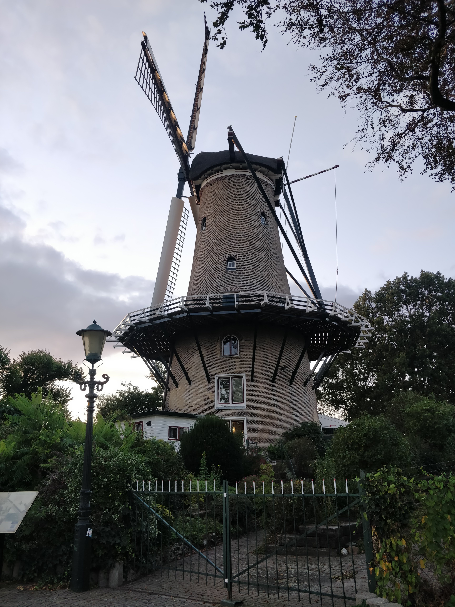
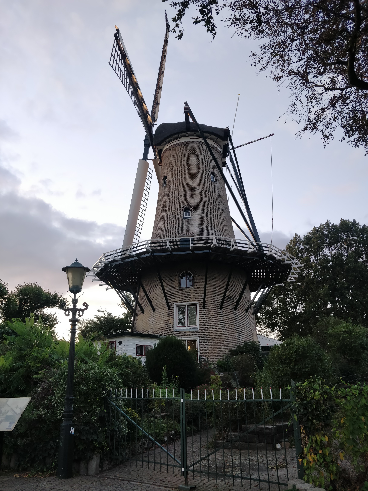

Wandelen in Alkmaar
Wandelen in en rondom Alkmaar is top, er is veel te zien waar je ook van houd. Voor de stadsliefhebber is in Alkmaar veel te zien, van grote kerken en andere historische gebouwen naar oude pakhuizen en grachten die een verhaal vertellen over de geschiedenis van Alkmaar. Ook voor de natuurliefhebber stelt Alkmaar niet teleur, even buiten de stad zijn er verschillende mooie wandelplekken te benemen van bossen en weilanden tot meren en duinen is er voor iedereen wel wat te zien. Op deze website vertellen wij u wat voor leuke wandelroutes er te beleven zijn en helpen we u Alkmaar te leren kennen. Hier meer over de geschiedenis van Alkmaar.
 
